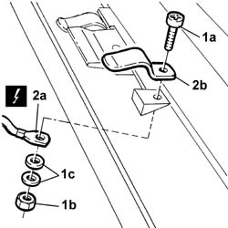
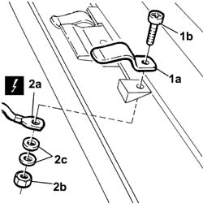

7030B80 Contact unit on sun roof frame - Replace
- Path
- Procedures > 70 FITTINGS > 7030 SUN ROOF AND HOOD > 7030B SLIDING ROOF > 7030B80 Contact unit on sun roof frame - Replace
- Kind
- repair procedure (removal / refitting; the operation number is the code)
- Applies to
- all engines; all production periods
- Interactive page
- https://sloeber94.github.io/elrnDB-lThss/en/#/126572
Applies to: all engines; all production periods
Applies to: all engines; all production periods
 Removing
Removing
 Refitting
Refitting- Disconnect the negative battery terminal.
See in Op. 7030B64 Sun roof control SWITCH - R.R.
1. Undo the fixing bolt (1a) and keep the nut (1b) and the washers (1c).
2. Disconnect the electrical connection (2a) and remove the contact (2b).

Applies to: all engines; all production periods
Refitting
Removing1. Position the contact (1a) and fit the bolt (1b).
2. Connect the electrical connection (2a) and tighten the nut (2b) after having fitted the washers (2c).

Applies to: all engines; all production periods
See in Op. 7030B64 Sun roof control SWITCH - R.R.
- Connect the negative battery terminal.